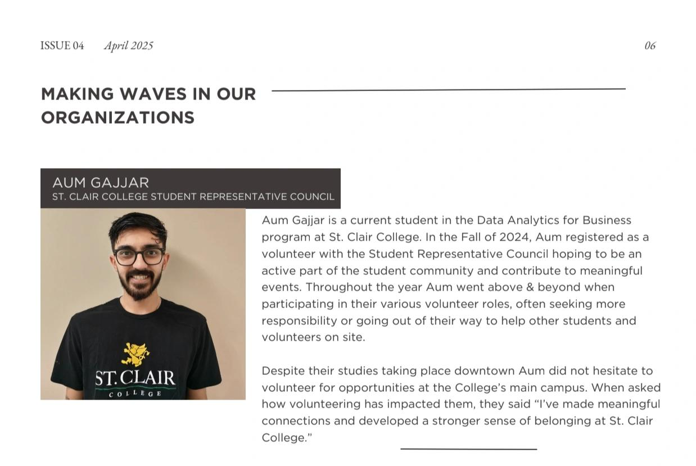

Education, Honors & Certifications
Academic foundations in data analytics and engineering, verified enterprise certifications (Salesforce, ServiceNow), and campus leadership awards.
Academic Degrees
Graduate Certificate in Data Analytics for Business
Specialized graduate program covering exploratory data analysis, statistical modeling, database systems, predictive machine learning, cloud analytics, and executive business reporting.
Bachelor of Engineering in Electronics & Communication
Foundational four-year engineering curriculum in computational algorithms, digital logic, data communication networks, signal processing, and systems architecture.
Honors, Awards & Campus Leadership
Recognitions awarded by the Student Representative Council (SRC), Zekelman School of Information Technology, and community organizations for student advocacy, volunteer service, and academic distinction.
Most Involved Class Representative of the Year
Awarded by the SRC Executive Board recognizing outstanding dedication, proactive engagement, and exceptional service to a cohort of 60+ Data Analytics students and the college community.
- › Student Advocacy & Liaison: Primary point of contact between faculty and 60+ students, resolving academic needs.
- › Community Engagement: Maximized student participation in academic workshops and volunteer events.
Student Volunteer of the Year Award
Honoured for outstanding campus contributions across four consecutive semesters as SRC Class Representative, active member of the Data Club, and Public Speaking Club.
- › Peer Mentorship: Fostered collaborative study environments navigating complex analytics curriculum.
- › Campus Impact: Dedicated 100+ volunteer hours while maintaining high academic performance.
Letter of Academic Distinction — Data Analytics for Business
Awarded by the Zekelman School of Information Technology for the Fall 2024 semester, recognizing exceptional mastery of core Data Analytics concepts with a perfect 4.0 GPA.

National Volunteer Week Profile & Feature
Profiled and celebrated nationally during National Volunteer Week for dedicated community service, student mentorship, and college campus leadership.
Verified Professional Credentials
Specialized industry credentials spanning CRM, ServiceNow analytics, sustainability reporting, and Python automation.
Salesforce Certified Associate & Platform Foundation
Proficiency in Salesforce data architecture, custom reporting, dashboard modeling, user access control, and platform navigation.
ServiceNow Micro-Certification: Platform Analytics
Competencies in Now Platform visual analytics, KPI dashboard design, automated reporting workspaces, and data visualization.
ServiceNow Micro-Certification: Welcome to ServiceNow
Core platform architecture, table relational schemas, IT Service Management (ITSM) workflows, and automated service catalogs.
ESG Virtual Experience Program
Environmental, Social, and Governance (ESG) metrics analysis, corporate sustainability reporting, data reconciliation, and executive dashboards.
Career Essentials in Data Analysis
Data cleaning, exploratory data analysis, visual storytelling, business communication, and statistical foundations.
Python Essential Training
Object-oriented programming, data structures, scripting, web scraping with BeautifulSoup/Selenium, and pandas analysis.
Looking for a Comprehensive Curriculum Vitae?
Download the latest single-page executive resume containing detailed project metrics, cloud architectures, and verifiable credentials.